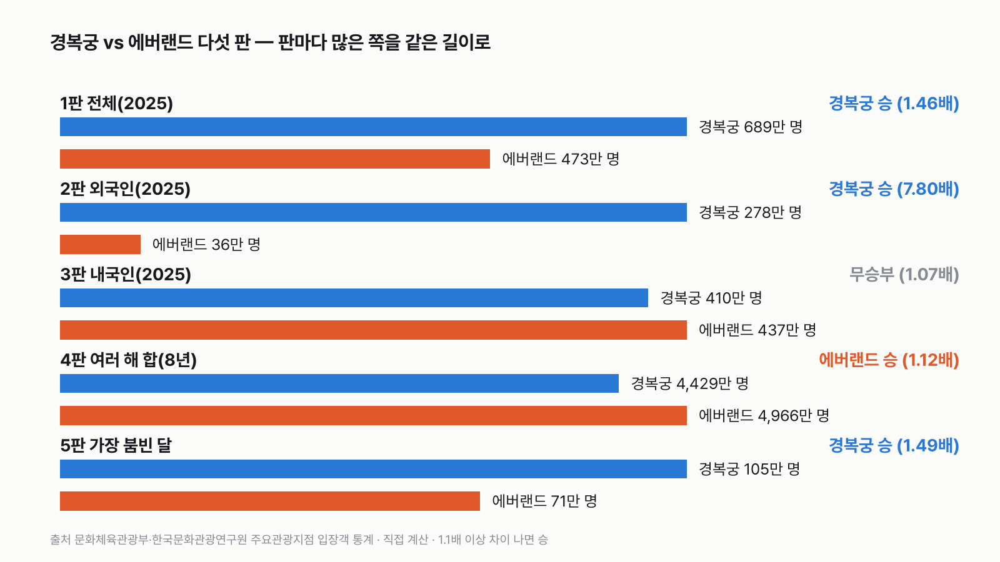
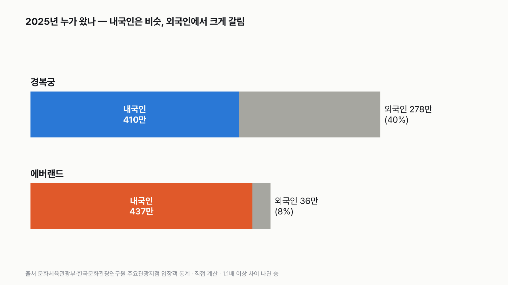
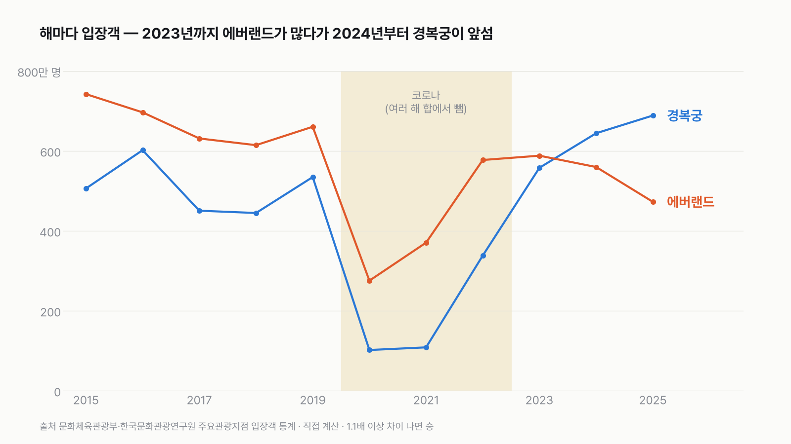

경복궁 vs 에버랜드, 1년에 사람이 더 많이 찾는 곳은 어디일까
'한국에서 사람 제일 많이 모이는 곳' 하면 놀이공원을 떠올리기 쉬워요. 그런데 요즘 서울 시내에서는 한복 입고 궁궐을 걷는 사람이 부쩍 많아 보여요. 궁궐과 놀이공원, 숫자로 겨루면 누가 이길까요?

독자 투표
경복궁 vs 에버랜드, 다섯 판 승부로 1년에 사람이 더 많이 찾는 곳은?
이 대결의 규칙 자세히 (자료·판정 기준)
3줄 요약
- 서울 한가운데 궁궐 경복궁과 용인의 놀이공원 에버랜드, 1년 동안 표를 끊거나 문을 지나 들어간 사람 수를 견줘요.
- 두 곳 모두 문화체육관광부의 같은 통계표, '주요관광지점 입장객 통계'에 실린 숫자만 써요.
- 전체, 외국인, 내국인, 여러 해 합, 가장 붐빈 달, 다섯 판 승부예요.
조건과 규칙
- 같은 표만 써요. 문화체육관광부·한국문화관광연구원 관광지식정보시스템의 「주요관광지점 입장객 통계」예요. 관광지마다 매달 내국인과 외국인 입장객을 따로 내요. 경복궁은 다른 기관이 '관람객'으로 따로 센 숫자도 있지만, 세는 방법이 다를 수 있어 쓰지 않아요.
- 입장 '횟수'를 세요. 같은 사람이 두 번 오면 두 명이에요. 연간이용권으로 자주 오는 사람도 올 때마다 한 명이에요.
- 코로나 해는 따로 다뤄요. 2020~2022년은 두 곳 모두 문을 닫거나 인원을 제한했어요. '여러 해 합' 판에서는 두 곳 모두 이 세 해를 빼요.
- 다섯 판: ① 2025년 전체 ② 2025년 외국인 ③ 2025년 내국인 ④ 2015~2025년 합(2020~2022 뺌) ⑤ 2025년 가장 붐빈 달.
- 판마다 많은 쪽이 1.1배 이상이면 이기고, 안 되면 무승부예요. 이긴 판이 많은 쪽이 최종 승자예요.
결과 요약
다섯 판 경복궁 3승, 에버랜드 1승, 무승부 1 → 최종 경복궁 승
- 2025년 전체: 경복궁 689만 명, 에버랜드 473만 명이에요. 경복궁이 1.46배로 이겨요.
- 2025년 외국인: 경복궁 278만 명, 에버랜드 36만 명이에요. 경복궁이 7.80배로 크게 이겨요.
- 2025년 내국인: 에버랜드 437만 명, 경복궁 410만 명이에요. 차이가 1.07배라 무승부예요.
- 여러 해 합(8년): 에버랜드 4,966만 명, 경복궁 4,429만 명이에요. 에버랜드가 1.12배로 이겨요.
- 가장 붐빈 달: 둘 다 2025년 10월이에요. 경복궁 105만 명, 에버랜드 71만 명으로 경복궁이 1.49배로 이겨요.
그래서? 2023년까지는 해마다 에버랜드가 더 많았어요. 2024년에 처음 자리가 바뀌었고, 2025년에는 차이가 더 벌어졌어요. 승부를 가른 건 외국인이에요. 한국 사람만 세면 두 곳은 거의 같아요. 1년 전 숫자로 겨뤘다면 2승 2패 1무로 비겼을 거예요.
독자 예상 vs 데이터 결과
경복궁 vs 에버랜드, 다섯 판 승부로 1년에 사람이 더 많이 찾는 곳은?
데이터로 보면 경복궁. 2025년 경복궁 689만 명, 에버랜드 473만 명. 외국인(278만 vs 36만)에서 크게 갈리고, 내국인은 비겨요. 2015년부터 합치면 아직 에버랜드가 많아요.
3줄 요약
- 서울 한가운데 궁궐 경복궁과 용인의 놀이공원 에버랜드, 1년 동안 표를 끊거나 문을 지나 들어간 사람 수를 견줘요.
- 두 곳 모두 문화체육관광부의 같은 통계표, '주요관광지점 입장객 통계'에 실린 숫자만 써요.
- 전체, 외국인, 내국인, 여러 해 합, 가장 붐빈 달, 다섯 판 승부예요.


| 판 | 경복궁 | 에버랜드 | 배수 | 승자 |
|---|---|---|---|---|
| 1판 2025년 전체 | 688만 6,650명 | 472만 7,157명 | 1.46배 | 경복궁 |
| 2판 2025년 외국인 | 278만 3,998명 | 35만 6,971명 | 7.80배 | 경복궁 |
| 3판 2025년 내국인 | 410만 2,652명 | 437만 186명 | 1.07배 | 무승부 |
| 4판 여러 해 합(2015~2019, 2023~2025) | 4,429만 1,115명 | 4,965만 9,009명 | 1.12배 | 에버랜드 |
| 5판 2025년 가장 붐빈 달(둘 다 10월) | 105만 2,382명 | 70만 5,395명 | 1.49배 | 경복궁 |
| 최종 | 경복궁 3승 1패 1무 → 경복궁 승 |
1판 2025년 전체: 경복궁 승(1.46배)
2025년 경복궁에는 688만 명이 들어갔어요. 하루로 나누면 약 1만 9천 명이에요. 에버랜드는 473만 명, 하루 약 1만 3천 명이에요. 경복궁에 216만 명이 더 들어갔어요.
2판 외국인: 경복궁 승(7.80배)
가장 크게 벌어진 판이에요. 2025년 경복궁을 찾은 외국인은 278만 명으로, 경복궁 입장객 10명 가운데 4명이에요. 에버랜드 외국인은 36만 명, 10명 가운데 1명도 안 돼요. 외국인 관광객에게 경복궁은 서울에 오면 들르는 곳이고, 에버랜드는 서울에서 1시간 넘게 따로 가야 하는 곳이에요.
3판 내국인: 무승부(1.07배)
한국 사람만 세면 에버랜드 437만 명, 경복궁 410만 명이에요. 에버랜드가 27만 명 많지만 1.1배에 못 미쳐 비겨요. 놀이공원과 궁궐이 한국 사람에게는 거의 같은 크기로 사람을 모아요.


4판 여러 해 합: 에버랜드 승(1.12배)
2015년부터 2025년까지, 코로나 세 해를 빼고 8년을 합치면 에버랜드 4,966만 명, 경복궁 4,429만 명이에요. 오래 쌓은 숫자로는 아직 에버랜드가 앞서요. 하지만 1.1배 선을 겨우 넘었어요. 경복궁이 이 8년 동안 해마다 약 11만 명만 더 왔어도 비겼어요.
5판 가장 붐빈 달: 경복궁 승(1.49배)
두 곳 모두 2025년 10월이 가장 붐볐어요. 경복궁은 한 달에 105만 명, 에버랜드는 71만 명이 들어갔어요. 이 달은 추석 연휴에 궁궐을 무료로 연 것으로 알려진 달이고(언론 보도, 공식 원문은 못 찾았어요), 경복궁 쪽 숫자가 크게 뛰었어요(아래 '세는 방법이 서로 달라요' 참고). 경복궁으로서는 2015년 이후 가장 많은 달이에요. 에버랜드도 2022년 10월에는 105만 명을 받은 적이 있어요. 2025년 10월에는 그만큼 모이지 않았어요. 2025년에는 경복궁이 열두 달 모두 에버랜드보다 많았어요.
2024년에 자리가 바뀌었어요
2015년에는 에버랜드 742만 명, 경복궁 506만 명이었어요. 에버랜드가 1.47배 많았어요. 코로나 전 2019년에도 에버랜드가 661만 명, 경복궁이 535만 명이었어요. 코로나 뒤 2023년에 거의 따라잡았고(1.05배, 무승부 선 안), 2024년에 경복궁 644만 명, 에버랜드 560만 명으로 처음 뒤집혔어요.


경복궁은 늘고, 에버랜드는 줄었어요
10년 사이 경복궁 입장객은 2015년보다 36% 늘었어요. 에버랜드는 36% 줄었어요. 에버랜드는 특히 내국인이 696만 명에서 437만 명으로 줄었어요. 이 표만으로는 왜 줄었는지 알 수 없어요. 저출생으로 아이와 함께 오는 가족이 줄었는지, 다른 놀이시설로 옮겨 갔는지는 이 숫자로 가릴 수 없어요.
외국인이 돌아오면서 갈렸어요
코로나 때 경복궁 외국인은 2021년 1만 9천 명까지 줄었어요. 2023년 109만 명, 2024년 203만 명, 2025년 278만 명으로 빠르게 늘었어요. 에버랜드 외국인은 코로나 전 2019년 89만 명이었는데, 2025년에도 36만 명으로 그때의 절반이 안 돼요. 외국인이 돌아온 곳이 궁궐 쪽이었던 거예요.
경복궁은 1주일에 하루 쉬어요
경복궁은 화요일마다 문을 닫아요. 2025년에 문을 연 날은 많아야 313일이에요. 에버랜드는 거의 매일 열어요. 문을 연 날로 나눠 하루 평균을 보면 경복궁 약 2만 2천 명, 에버랜드 약 1만 3천 명이라 차이가 1.70배로 더 벌어져요.
다르게 세면
| 이렇게 바꾸면 | 경복궁 | 에버랜드 | 배수 | 승자 |
|---|---|---|---|---|
| 기본 1판(2025년 전체) | 689만 명 | 473만 명 | 1.46배 | 경복궁 |
| 1판을 문 연 날 하루 평균으로 | 2만 2,002명 | 1만 2,951명 | 1.70배 | 경복궁 |
| 4판에 코로나 세 해를 넣어 11년 합 | 4,978만 명 | 6,189만 명 | 1.24배 | 에버랜드 |
| 4판을 코로나 전 5년(2015~2019)만 | 2,538만 명 | 3,345만 명 | 1.32배 | 에버랜드 |
| 4판을 코로나 뒤 3년(2023~2025)만 | 1,891만 명 | 1,621만 명 | 1.17배 | 경복궁 |
| 기준 해를 2024년으로: 전체 | 644만 명 | 560만 명 | 1.15배 | 경복궁 |
| 기준 해를 2024년으로: 외국인 | 203만 명 | 41만 명 | 4.95배 | 경복궁 |
| 기준 해를 2024년으로: 내국인 | 442만 명 | 519만 명 | 1.17배 | 에버랜드 |
| 기준 해를 2024년으로: 여러 해 합(2015~2019, 2023~2024) | 3,740만 명 | 4,493만 명 | 1.20배 | 에버랜드 |
| 기준 해를 2024년으로: 가장 붐빈 달 | 83만 명 | 78만 명 | 1.07배 | 무승부 |
| 기준 해를 2023년으로: 전체 | 558만 명 | 588만 명 | 1.05배 | 무승부 |
기준 해를 1년 당겨 2024년으로 하면 경복궁이 전체·외국인, 에버랜드가 내국인·여러 해 합을 이기고 가장 붐빈 달은 비겨요. 2승 2패 1무로 무승부예요. 판정은 '언제 세느냐'에 크게 달려 있어요. 지금 흐름이 이어지면 여러 해 합 판도 몇 년 안에 뒤집힐 수 있지만, 앞으로의 숫자는 이 표가 말해 주지 않아요.
세는 방법이 서로 달라요
같은 표 안이지만 두 곳이 숫자를 내는 방법은 달라요. 표의 관광지 설명에 경복궁은 '입장권 발권', 에버랜드는 '무인계측기'로 센다고 적혀 있어요. 경복궁은 끊은 표의 수, 에버랜드는 문을 지난 사람을 기계로 센 수예요. 무료로 들어가는 사람이 경복궁의 발권 수에 들어가는지는 표에 설명이 없어요. 다만 추석 연휴 무료 개방이 낀 달마다 경복궁 내국인 수가 앞뒤 달보다 크게 뛰어요. 2017년 10월과 2023년 10월은 정부 보도자료로 무료 개방을 확인했고, 2018년 9월과 2025년 10월은 무료 개방이 있었던 것으로 알려진 달이에요(언론 보도). 무료 입장도 발권 수에 들어가는 것으로 보여요(추정). 그래서 이 비교는 '두 곳이 스스로 낸 공식 숫자'끼리의 비교예요.
궁궐 돌담길과 놀이공원 정문, 올해 어느 쪽 줄에 서 보셨나요?
이 숫자는 어디서 왔나요
출처
기준일 입장객은 2015년 1월~2025년 12월 월별 값이에요(2026년 11월 10일에 받음, 표에는 2026년 6월까지 있음). 조건은 2026년 11월 10일, 원자료를 보기 전에 정했어요.
문화체육관광부·한국문화관광연구원 관광지식정보시스템(know.tour.go.kr)
- 주요관광지점 입장객 통계(월별, 내국인·외국인)
다섯 판 모두, 연도별 흐름
- 관광지 상세(집계 방법: 경복궁 '입장권 발권', 에버랜드 '무인계측기')
세는 방법 차이
문화체육관광부 보도자료
- 넉넉한 추석 연휴, 국립문화시설에서 누리는 풍성한 문화(2017.9.25.)원본 보기
2017년 추석 연휴 4대 고궁·종묘·왕릉 무료 개방
문화재청(현 국가유산청) 보도자료
- 무료 개방하는 궁·능 방문하고, 무형유산 체험하며 즐기는 추석(2023.9.19.)원본 보기
2023년 추석 연휴(9.28.~10.3.) 4대궁·종묘·조선왕릉 무료 개방
어떻게 셌나요
- 자료: 관광지식정보시스템 「주요관광지점 입장객 통계」에서 서울 종로구와 경기 용인시를 골라 2015년 1월~2025년 12월 월별 값을 받았어요. 표에는 2026년 6월까지 있지만, 열두 달이 다 있는 가장 최근 해인 2025년을 기준 해로 썼어요.
- 1~3판: 2025년 열두 달의 합계·외국인·내국인 입장객을 더했어요.
- 4판: 2015~2019년과 2023~2025년, 8년의 합계를 더했어요.
- 5판: 2025년 열두 달 가운데 각자 가장 많은 달끼리 견줬어요.
- 판정: 판마다 큰 값 ÷ 작은 값이 1.1 이상이면 큰 쪽 승, 안 되면 무승부예요.
| 항목 | 값 | 잰 것 / 가정 |
|---|---|---|
| 경복궁 2025년 입장객(내국인 · 외국인) | 410만 2,652명 · 278만 3,998명 | 잰 것(입장권 발권) |
| 에버랜드 2025년 입장객(내국인 · 외국인) | 437만 186명 · 35만 6,971명 | 잰 것(무인계측기) |
| 같은 사람의 여러 번 입장 | 올 때마다 1명 | 가정(표의 세는 방식을 따름) |
| 경복궁 2025년 문 연 날 | 313일(화요일 52일 뺌) | 가정(임시 휴궁·개방 무시) |
| 에버랜드 2025년 문 연 날 | 365일 | 가정 |
한계 6가지
이 데이터로 말할 수 없는 것
- 두 곳은 세는 방법이 달라요. 경복궁은 발권 수, 에버랜드는 기계가 센 입장 수예요. 다시 들어온 사람, 직원이 어떻게 들어가는지 표에는 설명이 없어요.
- 추석 연휴 무료 개방이 낀 달에 경복궁 내국인 수가 튀어요. 무료 입장도 발권 수에 들어가는 것으로 보여요(추정). 무료 개방은 2017년 10월, 2023년 10월만 정부 보도자료로 확인했어요. 2018년 9월, 2025년 10월은 무료 개방이 있었던 것으로 알려진 달(언론 보도)이고, 공식 원문은 찾지 못했어요. 5판의 2025년 10월도 여기에 들어가요.
- 입장 '횟수'라서 서로 다른 '사람 수'와는 달라요. 연간이용권으로 자주 오는 사람이 많을수록 에버랜드 숫자가 커져요.
- 같은 표에 캐리비안베이(워터파크)가 에버랜드와 따로 실려 있어서, 에버랜드 숫자에는 워터파크가 들어가지 않는다고 봤어요. 경복궁 안의 박물관 관람객이 경복궁 숫자에 들어가는지는 표에 설명이 없어요.
- 2016년 경복궁 외국인(290만 명)은 앞뒤 해보다 크게 많아요. 표 값을 고치지 않고 그대로 썼어요.
- 입장객이 늘거나 준 까닭은 이 표로 알 수 없어요.
다음 대결
대결 다 보기걷기 vs 운동
걷기·산책 vs 개인 운동, 하루에 한 사람이 더 많은 쪽은?
A걷기·산책vsB개인 운동
투표하러 가기
대결하루 시간투표했어요TV 승TV vs 영상
TV vs 영상, 하루에 본 사람이 더 많은 쪽은?
ATV(실시간 방송)vsB영상(다시보기·동영상)
투표하러 가기
대결설문투표했어요믿을 수 있다 승우리 사회, 믿을 수 있다 vs 없다
우리 사회, '믿을 수 있다' vs '믿을 수 없다' 더 많은 쪽은?
A믿을 수 있다vsB믿을 수 없다
투표하러 가기
대결하루 시간투표했어요반려동물 승반려동물 vs 식물
반려동물 돌보기 vs 식물 돌보기, 하루에 한 사람이 더 많은 쪽은?
A반려동물 돌보기vsB식물 돌보기
투표하러 가기
대결하루 시간투표했어요책 승책 vs 모바일 게임
책 읽기 vs 모바일 게임, 하루에 한 사람이 더 많은 쪽은?
A책 읽기vsB모바일 게임
투표하러 가기
대결하루 시간투표했어요신문 승신문 vs SNS
신문 보기 vs SNS 교제, 하루에 한 사람이 더 많은 쪽은?
A신문 보기vsBSNS 교제
투표하러 가기
대결설문투표했어요없다 승기부할 생각, 있다 vs 없다
앞으로 기부할 생각, '있다' vs '없다' 더 많은 쪽은?
A있다vsB없다
투표하러 가기
대결설문투표했어요근로시간 승월급 vs 근로시간
직장에서 임금 만족 vs 근로시간 만족, 만족한다는 사람이 더 많은 쪽은?
A임금vsB근로시간
투표하러 가기
새 글 나오면 받아 보기
피드 리더 앱에 이 사이트 주소를 한 번 넣어 두면, 새 글이 올라올 때 앱에 떠요. 가입이나 메일 주소는 필요 없어요.
받는 법 보기
- 피드 리더 앱을 하나 골라요. 새 글을 모아 보여 주는 앱이에요. 예를 들면 Feedly나 Inoreader가 있어요. 둘 다 무료고 웹·휴대폰에서 써요.
- 앱에서 '구독 추가'(+)를 누르고 아래 주소를 붙여 넣어요.
- 끝이에요. 새 글이 올라오면 앱 목록에 떠요.
https://protofu.github.io/opendata-insight/feed.xmlFeedly를 쓴다면 여기를 눌러 바로 추가할 수도 있어요.